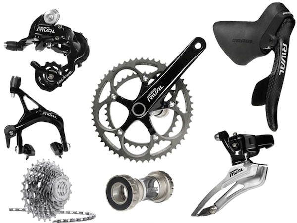
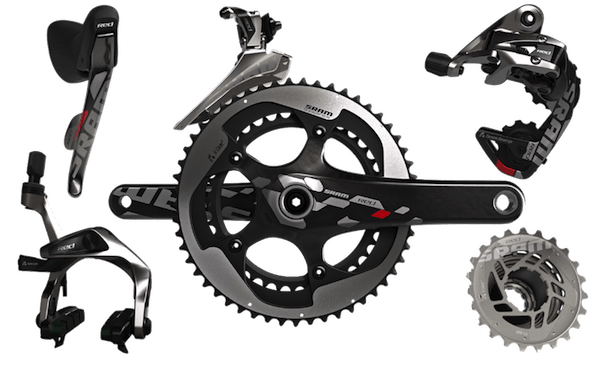
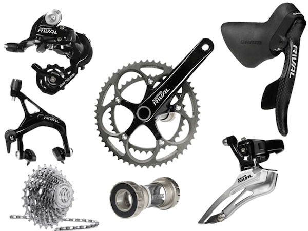
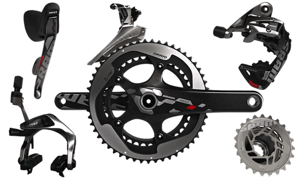

The first clearly recorded instance of a balloon carrying passengers used hot air to generate buoyancy and was built by the brothers Joseph-Michel and Jacques-Etienne Montgolfier in Annonay, France. After experimenting with unmanned balloons and flights with animals, the first tethered balloon flight with humans on board took place on October 15, 1783.
André-Jacques Garnerin carried out the first jump with a silk parachute on October 22, 1797 at Parc Monceau, Paris. Garnerin's first parachute resembled a closed umbrella before he ascended; at a height of approximately 3,000 feet he severed the rope that connected his parachute to the balloon, and the basket fell to earth. Garnerin emerged uninjured.
On January 7, 1785, Jean Pierre Blanchard and Dr. John Jeffries made the first flight over the English Channel, traveling from Dover to France. During the crossing the balloon lost altitude, so they began tossing everything in the gondola they possibly could, even their clothes. About two hours after take off, they crossed the French coast clad only in their underwear.
On January 7, 1785, Jean Pierre Blanchard and Dr. John Jeffries made the first flight over the English Channel, traveling from Dover to France. During the crossing the balloon lost altitude, so they began tossing everything in the gondola they possibly could, even their clothes. About two hours after take off, they crossed the French coast clad only in their underwear.
 


